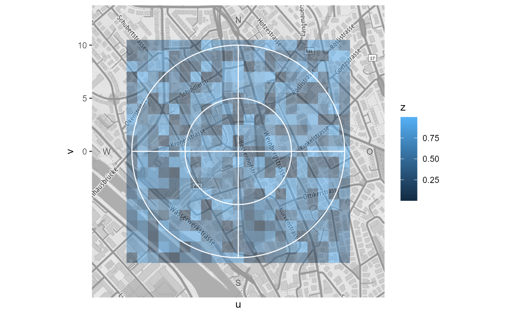
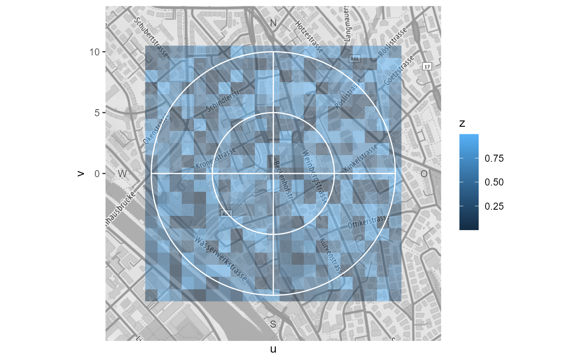

A cartesian coordinate system overlayed with a polar grid.
It is used together with summary_wind_2d() in ggpolarplot().
coord_cartpolar(
limit = NA,
expand = TRUE,
clip = "on",
bg = NULL,
grid = c("background", "foreground")
)Arguments
- limit
limit for coordsystem (xlim(-limit, limit), ylim(-limit, limit))
- expand
if
TRUE- clip
clip panel (not sure if used)
- bg
raster for background image
- grid
draw the lines and labels of the polar grid in the foreground or background
Warning
This coordinate system bends some ggplot2 internals (eg. diverted x axis). It works for our scope, but the testing was surficial. And probably some things could easily break. Things that breaks this coord:
setting limits in x scale
Examples
library(ggplot2)
df <- tibble::tribble(
~wd, ~ws, ~facet,
0, 5, 1,
0, 2.5, 1,
0, 9.5, 1,
0, 4, 1,
90, 4, 1,
180, 4, 1,
270, 4, 1,
30, 8, 2,
120, 8, 2,
200, 8, 2,
300, 8, 2
)
df <- dplyr::mutate(df,
u = .data$ws * sin(2 * pi * .data$wd / 360),
v = .data$ws * cos(2 * pi * .data$wd / 360)
)
p <- ggplot(df, aes(x=u, y=v)) + geom_point()
p + coord_cartpolar()
# y scale is used for uv scaling (negative breaks are ignored)
p + coord_cartpolar() +
scale_y_continuous(
limits = c(-10, 10),
breaks = c(-5, 0, 1, 2.5, 7.5, 10),
expand = c(0, 0, 0, 0)
)
 # alternative argument limit of coord_cartpolar can be used
p + coord_cartpolar(limit = 5)
#> Warning: Removed 3 rows containing missing values (geom_point).
# alternative argument limit of coord_cartpolar can be used
p + coord_cartpolar(limit = 5)
#> Warning: Removed 3 rows containing missing values (geom_point).
 # a continuous x scale is used to control the breaks and labels
# for wd. Setting limits in this scale will cause problems
p + coord_cartpolar() +
scale_x_continuous(
breaks = c(0, 45, 90, 180, 270),
labels = c("Nord", "NE", "E", "S", "W")
)
# a continuous x scale is used to control the breaks and labels
# for wd. Setting limits in this scale will cause problems
p + coord_cartpolar() +
scale_x_continuous(
breaks = c(0, 45, 90, 180, 270),
labels = c("Nord", "NE", "E", "S", "W")
)
 # theming: only major grid is draw
p + coord_cartpolar() +
theme(
"panel.grid.major.x" = element_line(color = "red", size = 2, linetyp = "dashed"),
"panel.grid.major.y" = element_line(color = "green", arrow = arrow()),
"axis.text.x" = element_text(color = "violet", size = 14, face = "bold"),
"axis.text.y" = element_text(color = "blue")
)
# theming: only major grid is draw
p + coord_cartpolar() +
theme(
"panel.grid.major.x" = element_line(color = "red", size = 2, linetyp = "dashed"),
"panel.grid.major.y" = element_line(color = "green", arrow = arrow()),
"axis.text.x" = element_text(color = "violet", size = 14, face = "bold"),
"axis.text.y" = element_text(color = "blue")
)
 # background map
bb <- bbox_lv95(2683141, 1249040, 500)
#> Warning: Discarded datum CH1903+ in Proj4 definition
bg <- get_stamen_map(bb)
#> Source : http://tile.stamen.com/terrain/16/34321/22945.png
#> Source : http://tile.stamen.com/terrain/16/34322/22945.png
#> Source : http://tile.stamen.com/terrain/16/34323/22945.png
#> Source : http://tile.stamen.com/terrain/16/34321/22946.png
#> Source : http://tile.stamen.com/terrain/16/34322/22946.png
#> Source : http://tile.stamen.com/terrain/16/34323/22946.png
#> Source : http://tile.stamen.com/terrain/16/34321/22947.png
#> Source : http://tile.stamen.com/terrain/16/34322/22947.png
#> Source : http://tile.stamen.com/terrain/16/34323/22947.png
#> Source : http://tile.stamen.com/terrain/16/34321/22948.png
#> Source : http://tile.stamen.com/terrain/16/34322/22948.png
#> Source : http://tile.stamen.com/terrain/16/34323/22948.png
p + coord_cartpolar(bg = bg)
# background map
bb <- bbox_lv95(2683141, 1249040, 500)
#> Warning: Discarded datum CH1903+ in Proj4 definition
bg <- get_stamen_map(bb)
#> Source : http://tile.stamen.com/terrain/16/34321/22945.png
#> Source : http://tile.stamen.com/terrain/16/34322/22945.png
#> Source : http://tile.stamen.com/terrain/16/34323/22945.png
#> Source : http://tile.stamen.com/terrain/16/34321/22946.png
#> Source : http://tile.stamen.com/terrain/16/34322/22946.png
#> Source : http://tile.stamen.com/terrain/16/34323/22946.png
#> Source : http://tile.stamen.com/terrain/16/34321/22947.png
#> Source : http://tile.stamen.com/terrain/16/34322/22947.png
#> Source : http://tile.stamen.com/terrain/16/34323/22947.png
#> Source : http://tile.stamen.com/terrain/16/34321/22948.png
#> Source : http://tile.stamen.com/terrain/16/34322/22948.png
#> Source : http://tile.stamen.com/terrain/16/34323/22948.png
p + coord_cartpolar(bg = bg)
 # faceting
p + coord_cartpolar(bg = bg) +
facet_wrap(vars(facet))
# faceting
p + coord_cartpolar(bg = bg) +
facet_wrap(vars(facet))
 # if plotting a raster layer, use grid = "foreground" to draw
# the polar grid over the raster. an expand of c(0, 0.5, 0, 0.5)
# can be used to compensated the added 0.5 from raster
raster <- expand.grid(u = -10:10, v = -10:10)
raster$z <- runif(nrow(raster))
ggplot(raster, aes(x=u, y=v, fill=z)) +
coord_cartpolar(bg = bg, grid = "foreground") +
geom_raster(alpha = 0.5) +
scale_y_continuous(expand = c(0, 0.5, 0, 0.5))

# -Inf, Inf, -Inf, Inf from annotation_raster get mapped
# over the complete panel
ggplot(raster, aes(x=u, y=v, fill=z)) +
coord_cartpolar(grid = "foreground") +
annotation_raster(bg, -Inf, Inf, -Inf, Inf) +
geom_raster(alpha = 0.5) +
scale_y_continuous(expand = c(0, 0.5, 0, 0.5))
# if plotting a raster layer, use grid = "foreground" to draw
# the polar grid over the raster. an expand of c(0, 0.5, 0, 0.5)
# can be used to compensated the added 0.5 from raster
raster <- expand.grid(u = -10:10, v = -10:10)
raster$z <- runif(nrow(raster))
ggplot(raster, aes(x=u, y=v, fill=z)) +
coord_cartpolar(bg = bg, grid = "foreground") +
geom_raster(alpha = 0.5) +
scale_y_continuous(expand = c(0, 0.5, 0, 0.5))

# -Inf, Inf, -Inf, Inf from annotation_raster get mapped
# over the complete panel
ggplot(raster, aes(x=u, y=v, fill=z)) +
coord_cartpolar(grid = "foreground") +
annotation_raster(bg, -Inf, Inf, -Inf, Inf) +
geom_raster(alpha = 0.5) +
scale_y_continuous(expand = c(0, 0.5, 0, 0.5))